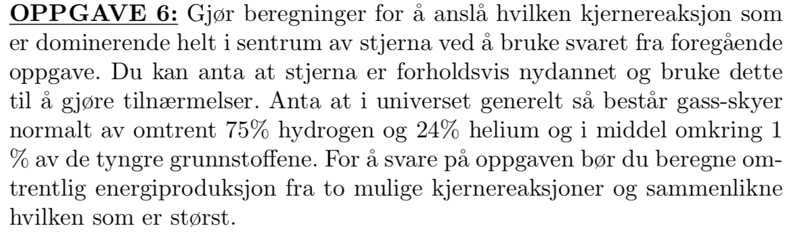

Forrige side🙂 🙁fusjonsreaksjonenePADLET
La oss prøve å bruke dette på oppgave 6 fra avsluttende eksamen 2012:  Anta at massen til stjerna er 3M⊙, radien til stjerna er 1.2 × 106 km og kjernetemperaturemn er 17 millioner Kelvin. Anta at massetettheten til stjerna er uniform (den samme gjennom hele) og at radien til kjernen til stjerna (den delen som har kjernereaksjoner) er 10% av radien til stjerna. I tillegg til å finne hvilken prosess som er mest dominerende, finn også ut den totale luminositeten til stjerna, summert over pp-kjeden og CNO-syklusen. Prøv nå så godt du kan å få til dette selv! Du må gå et par sider tilbake for å få tak i de riktige uttrykkene som du trenger.
Jeg har forsøkt!